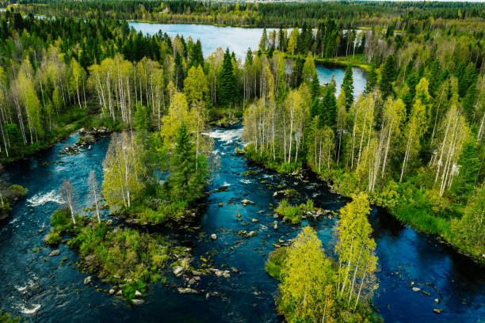
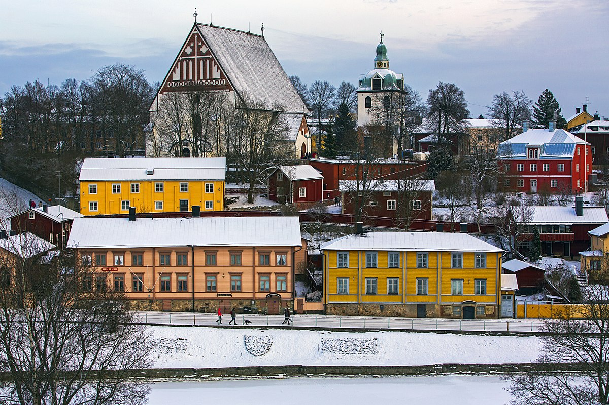
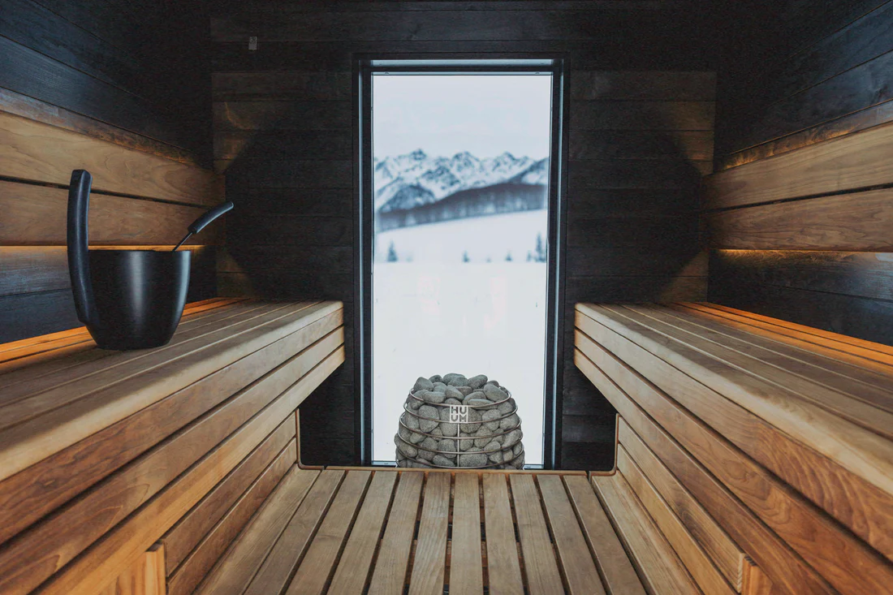

Откройте Финляндию
Северное сияние, уютные города, бескрайние леса и озёра — Финляндия ждёт вас!
Видеотур по Финляндии

Природа
Погрузитесь в атмосферу бескрайних лесов, чистейших озёр и арктической тундры.

Культура
Исследуйте старинные города и современные достопримечательности.

Сауна
Попробуйте финскую сауну — символ расслабления и здоровья.
Советы путешественникам
- Захватите тёплую одежду для зимних приключений.
- Попробуйте местные блюда, такие как рыба, ягодные десерты и хлеб с корицей.
- Обязательно посетите Лапландию зимой, чтобы увидеть северное сияние.